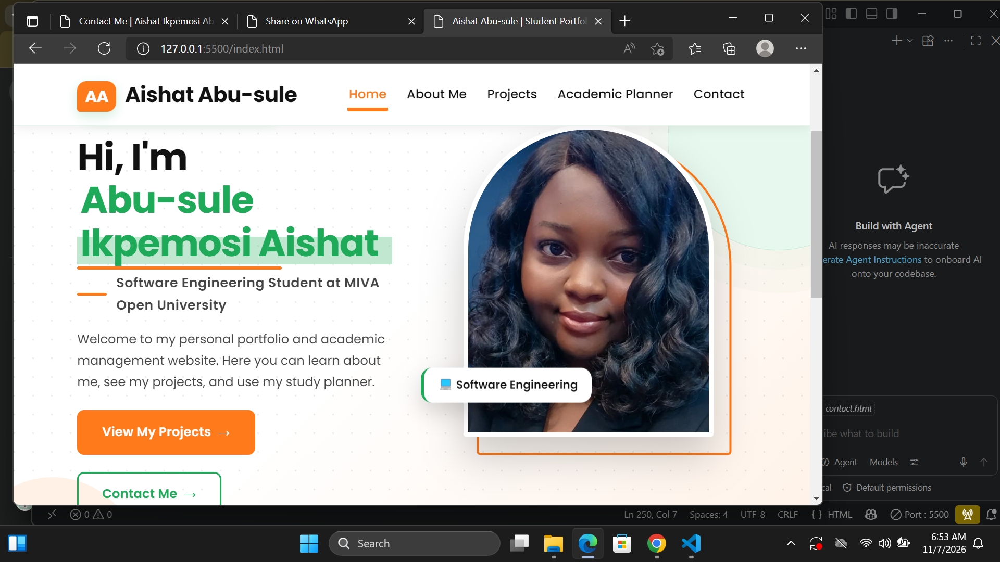
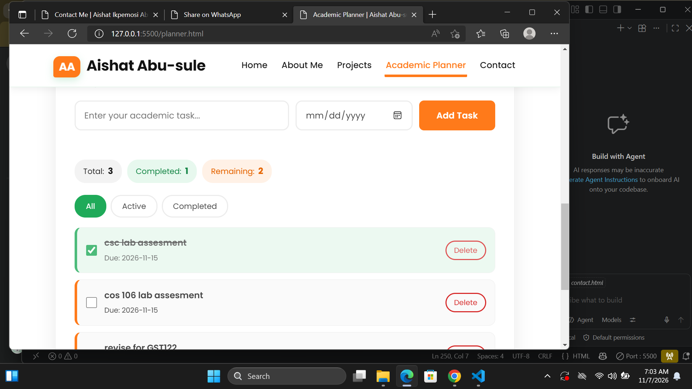
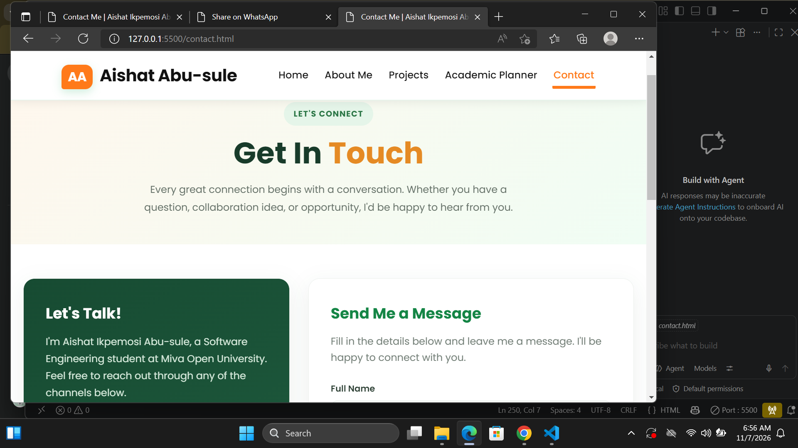

Personal Portfolio Website
A personal multi-page website created to introduce myself, showcase my educational background, share my interests and present my journey as a Software Engineering student.
These projects reflect my learning journey, creativity and growing interest in technology.

A personal multi-page website created to introduce myself, showcase my educational background, share my interests and present my journey as a Software Engineering student.

A student organisation project designed to help manage academic activities, assignments and study tasks in an organised way.

A web page designed to make communication easier by providing visitors with my contact information and an organised contact form.
A summary of my projects and the technologies I am learning and applying.
| Project | Technologies | Purpose |
|---|---|---|
| Personal Portfolio | HTML, CSS, JavaScript | Present my profile and skills |
| Academic Planner | HTML, CSS, JavaScript | Organise academic activities |
| Contact Page | HTML, CSS, JavaScript | Provide contact information |
I believe practical experience is an important part of becoming a good software engineer. Through personal projects and coursework, I am learning how to turn ideas into functional web pages.
I look forward to exploring software development, mobile application development and artificial intelligence as I continue to improve my technical skills.
Every project is another opportunity to learn, experiment and grow.